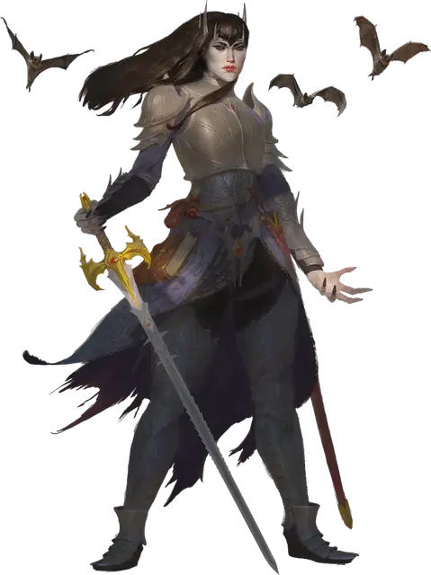

Дрелнза
Drelnza
Средняя Нежить (Вампир), законно-злая, именной НИП

Класс Доспеха 18 (латы)
Хиты 187 (22к8 + 88)
Скорость 30 футов, лазая 30 футов
| мод | спас | ||
|---|---|---|---|
| СИЛ | 18 | +4 | +4 |
| ЛОВ | 18 | +4 | +9 |
| ТЕЛ | 18 | +4 | +4 |
| мод | спас | ||
|---|---|---|---|
| ИНТ | 17 | +3 | +8 |
| МДР | 15 | +2 | +7 |
| ХАР | 18 | +4 | +9 |
Навыки Восприятие +7, Магия +8, Обман +9
Сопротивление урону некротическая энергия
Иммунитет к состояниям истощение
Чувства тёмное зрение 120 футов, пассивное Восприятие 17
Языки Общий, Бездны, Великаний
Опасность 15 (13000 опыта)
Бонус мастерства +5
Особенности
Легендарное сопротивление (3/день). Если Дрелнза провалит спасбросок, она может вместо этого сделать спасбросок успешным.
Особое снаряжение. Дрелнза вооружена еретиком [heretic].
Паучье лазание. Дрелнза может лазать по сложным поверхностям, включая потолки, без совершения проверок характеристик.
Повышенная чувствительность к солнечному свету. Дрелнза получает 20 урона излучением, если начинает ход под солнечным светом. Находясь на солнечном свету, она совершает с помехой броски атаки и проверки характеристик.
Действия
Мультиатака. Дрелнза совершает одну атаку Укусом и одну атаку Еретиком.
Укус. . Рукопашная атака оружием: +9 к попаданию, досягаемость 5 фт., одно существо. Попадание: 7 (1к6 + 4) колющего урона плюс 10 (3к6) урона некротической энергией. Максимум хитов цели уменьшается на количество, равное полученному урону некротической энергией, а Дрелнза восстанавливает такое же количество хитов. Уменьшение хитов длится до тех пор, пока цель не окончит продолжительный отдых. Цель умирает, если этот эффект уменьшает максимум ее хитов до 0. Гуманоид, убитый этим способом, а после закопанный в землю, восстает следующей ночью в качестве порождения вампира [vampire spawn], находящегося под контролем Дрелнзы.
Еретик. . Рукопашная атака оружием: +12 к попаданию, досягаемость 5 фт., одна цель. Попадание: 40 (6к10 + 7) рубящего урона. Цель должна преуспеть в спасброске Телосложения Сл 17, иначе становясь парализованной до начала следующего хода Дрелнзы. Небожители совершают данный спасбросок с помехой.
Очарование. Дрелнза нацеливается на одного Гуманоида, которого видит в пределах 30 футов. Цель должна преуспеть в спасброске Мудрости Сл 17, иначе станет очарованной. Очарованная цель считает Дрелнзу верной подругой, о которой нужно заботиться, и которую нужно защищать. Несмотря на то, что цель не находится под контролем Дрелнзы, она выполняет ее просьбы и искренне прилагает все нужные для этого усилия.
Каждый раз, когда Дрелнза или ее спутники как-либо вредят цели, та может повторить спасбросок, заканчивая эффект на себе при успехе. В противном случае эффект длится 24 часа, пока хиты Дрелнзы не будут снижены до 0, пока она с целью не окажутся на разных планах существования или пока она не закончит эффект бонусным действием.
Реакции
Дрелнза может совершить до трех реакций за раунд, но только одну — за ход.
Перемещение. Сразу после того, как видимое ею существо заканчивает свой ход, Дрелнза перемещается на расстояние, не превышающее ее скорость, не провоцируя атаки.
Парирование. Дрелнза добавляет +5 к КД против одной рукопашной атаки, которая должна попасть по ней. Для этого она должна видеть атакующего и должна использовать рукопашное оружие.
Описание
Дрелнза является вампиром и дочерью Иггвилв.
Именно она — величайшее сокровище Королевы Ведьм, бессмертная воительница, охраняющая самые ценные вещи своей матери спустя десятилетия после таинственного ухода архимага. Личность отца Дрелнзы неизвестна даже ей самой.
Дрелнза дремлет в Затерянных пещерах Цойканта, пробуждаясь лишь затем, чтобы избавиться от тех немногих, кто сумеет добраться до клада Иггвилв. Из-за затянувшегося анабиоза Дрелнза еще не восстановила часть своих вампирских способностей.
В годы, предшествовавшие исчезновению Иггвилв, Дрелнза исполняла обязанности генерала в батальоне демонов, призванных на службу Королеве Ведьм. Вооруженная своим разумным длинным мечом – Еретиком – Дрелнза сеяла ужас среди населения Перренланда.